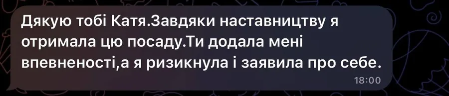
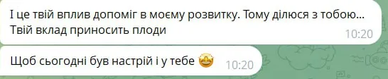
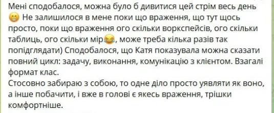
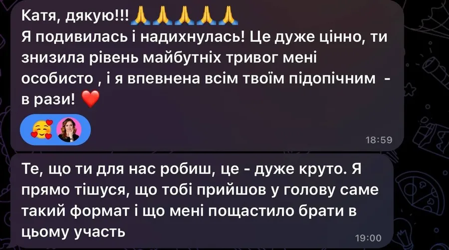
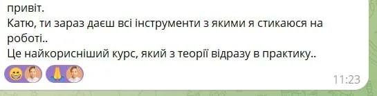
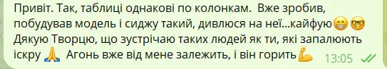
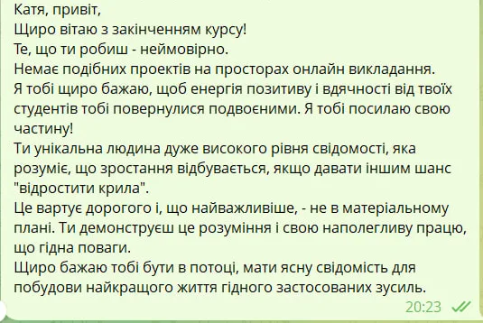
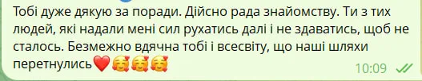
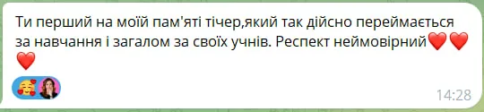

1
Орбіта «Знання»Розпаковка
Розумієш, про що постити. Збираєш свої файли: хто ти, для кого, твій голос, твій продукт, і проєкт у Claude, який тебе знає.
Система для життя, проявлення і блогу. Ти живеш, вона працює.
У центрі я, жива, з голосом, історіями і своїм ритмом. Навколо чотири орбіти, які забирають рутину: знання, проєкти, скіли і агенти. Обери орбіту, щоб побачити, з чого вона складається.
Гроші, план дня, задачі, тіло, звіт за день. Те, що зараз тримається в голові й нотатках, переїжджає в систему, яка працює щодня, навіть коли ти про неї не згадуєш.
Тобі є що сказати, але все відкладається на «потім». Система тримає твій голос, історії і теми під рукою, тому вийти до людей стає простіше, ніж промовчати.
Контент від ідеї до аналізу йде по готовому процесу, і блог перестає з'їдати вечори. Це приємний бонус до системи, а не головна мета.
Головне не блог. Головне, що в тебе з'являється система для тебе, а не ти для системи.
І взагалі, тобі вже є що сказати.
Тобі є що сказати і що показати. Досвід є, клієнти є, ідеї в нотатках є. А блог або стоїть, або з'їдає вечори: шукаєш теми, пишеш з нуля, переписуєш, сумніваєшся, і знову шукаєш теми.
Коротше, проблема не в тобі і не в алгоритмах. Проблема в тому, що блог у тебе працює як друга робота без системи. Кожен пост як перший.
Я це прожила. Фінансовий директор, вигорання, потім консалтинг у Швейцарії. І по факту для мене завжди працювало одне правило: система для мене, а не я для системи. З блогом так само.
Ми не починаємо з питання «який AI-інструмент вивчити». Ми починаємо з іншого: що ти хочеш перестати робити вручну?
І далі будуємо процес, який повторюється щотижня: від ідеї до аналізу результату. Не набір промптів, а одна система, де кожен крок зрозумілий і частину роботи вже робить AI.
Якщо вже відчуваєш, що тобі сюди, напиши мені в директ слово СИСТЕМА. Ось що це тобі дає:
А далі можна не читати :)
Хочу в предзаписРанковий план у Telegram: задачі, календар і пошта в одному повідомленні.
Голосове в потрібну тему: бот записує витрату, складає пост, рахує калорії з фото тарілки.
Айфон сам відправляє кроки, активні калорії і пульс у мій трекер.
Система сама зберігає копію всього, нічого не губиться.
Розумієш, про що постити. Збираєш свої файли: хто ти, для кого, твій голос, твій продукт, і проєкт у Claude, який тебе знає.
Будуєш систему контенту у своєму стилі, з монтажем рілз через Remotion Studio. Поки ролик монтується, ти живеш.
Автоматизація життя й контенту, як у мене: бот, який веде гроші, план, тіло і контент.
Твоя тема, аудиторія, голос і продукт записані один раз. AI знає тебе, і не треба щоразу пояснювати, хто ти.
У твоєму стилі, від ідеї до готового рілз, разом з монтажем. Поки ролик монтується, ти живеш.
Рутина життя й контенту робиться без тебе, як у мене: гроші, план, тіло, контент.
AI забирає рутину, але не пише замість тебе. Жодних безликих «аішних» текстів.
Веду тренінги з AI, Power BI і Fabric від Microsoft
Це просто супер! Дивлюсь і не вірю, що я змогла таке зробити! Катерино, не перестаю дякувати! В голові вже крутиться купа ідей, як застосувати ці знання в роботі!
Найкращий наставник, якого я можу щиро рекомендувати! Я з першого потоку навчання і можу впевнено сказати: Катерина неймовірна! Щира, відкрита, надихаюча та завжди готова підтримати. З нею хочеться вчитися, розвиватися і досягати більшого. Катерина це саме та людина, яка вірить у тебе навіть тоді, коли сам сумніваєшся. Дякую за все!
Мені дуже сподобалось спілкування з Катериною. Вона одразу професійно направила нашу розмову в правильний вектор. Все було зрозуміло, чітко й структуровано. Дуже відчувалась щира участь і зацікавленість у прийнятті правильного для мене рішення. Якщо ви ще вагаєтесь, то вже час діяти разом з таким чудовим наставником! Дякую!









«Система з AI» стартує вперше 01.12.2026, тому тут відгуки моїх учнів з інших навчань.
Формат, ціну і всі деталі розповідаю в особистих.
Хочу в предзаписЄ питання? Пиши в директ, відповідаю сама.